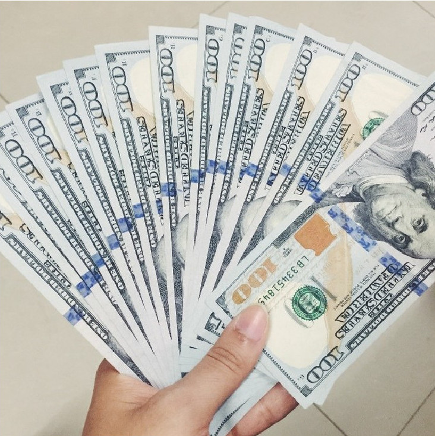
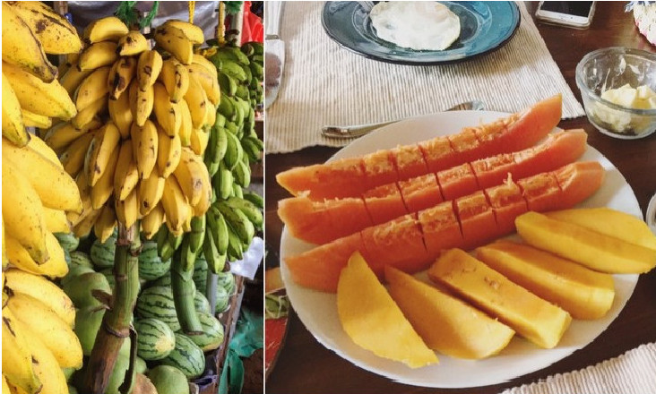
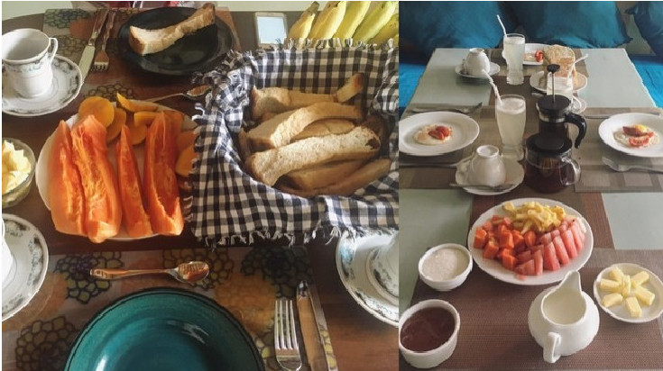
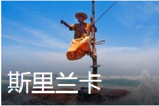

中国领先的自由行服务平台
颠覆全球200多个国家和地区
100,000,000位旅行者
920,000家国际酒店
21,000,000条真实点评
382,000,000次攻略下载
中国旅游行业第一部"玩法"
关于我们
关于蚂蜂窝
网络信息侵权通知指引
隐私政策
服务协议
联系我们
加入蚂蜂窝
旅游服务
旅游攻略
旅游特价
旅游问答
旅游指南
旅游咨询
全球供应商入驻
酒店预订
国际租车
旅游保险
订火车票
APP下载
 马蜂窝自由行
马蜂窝自由行官方订阅号
 马蜂窝良品
马蜂窝良品官方服务号
AprilB612
LV.3 2017-06-06 17:30164/4
18收藏
0分享
3人同行/5月中旬/9天9夜（不含往返）/人均8000rmb
——这是一篇全是干货/诚意满满的斯里兰卡自由行攻略。
-可爱的斯里兰卡小朋友-
信息搜集：Lonely Planet是必备资料，对每个城市的景点、食宿介绍得非常详尽，建议大家买一本，随用随查也很有纪念意义。蚂蜂窝和穷游网上有免费的斯里兰卡攻略可以下载，差不多就是简化版的LP。另外推荐一个公众号：斯里兰卡小妞，基本上可以解决你旅行前&旅程中遇到的一切问题，很实用。
时间选择：我们在出发时间的选择上很是简单粗暴，就挑了机票最便宜&答辩结束的交叉点。整体上气温比较适宜，没有很热，中部山区还很凉爽，也幸运的赶上了当地的某个佛教节日（整个国家氛围都很棒）。但其实5月是斯里兰卡的雨季，我们行程的后几天都遇到了阵雨，而且回国一周后斯里兰卡中南部就发生了洪水和山体滑坡，上网很惨重，现在回想起来还是有些后怕。建议大家在时间选择上多做攻略，安全第一（FYI：斯里兰卡的旅游旺季一般是12月到次年4月）。
行程规划：Lonely Planet是必备资料，对每个城市的景点、食宿介绍得非常详尽，建议大家买一本，随用随查也很有纪念意义。蚂蜂窝和穷游网上有免费的斯里兰卡攻略可以下载，差不多就是简化版的LP。另外推荐一个公众号：斯里兰卡小妞，基本上可以解决你旅行前&旅程中遇到的一切问题，很实用。
关于机票：我们在出发时间的选择上很是简单粗暴，就挑了机票最便宜&答辩结束的交叉点。整体上气温比较适宜，没有很热，中部山区还很凉爽，也幸运的赶上了当地的某个佛教节日（整个国家氛围都很棒）。但其实5月是斯里兰卡的雨季，我们行程的后几天都遇到了阵雨，而且回国一周后斯里兰卡中南部就发生了洪水和山体滑坡，上网很惨重，现在回想起来还是有些后怕。建议大家在时间选择上多做攻略，安全第一（FYI：斯里兰卡的旅游旺季一般是12月到次年4月）。
关于签证：淘宝办理特别省心，235rmb，基本24h出签。建议和行程单一起打印2份备用。
关于包车：斯里兰卡的公共交通有点一言难尽，包车出行是最美好的选择。淘宝（飞猪旅行）上有很多家店铺提供斯里兰卡包车服务，价格相差都差不多。我们选的是“美途旅行”，客服回复都很及时，车子干净舒适，司机也靠谱。我们包了8天的车，总价420$（不含每天给司机50rmb的小费），需要先付100$定金，行程结束当天结清尾款。
车型等级：舒适5座（1-3人送保险）;套餐类型：斯里兰卡包车不限行程！
关于换汇：斯里兰卡的官方货币是卢比，有些地方也可以使用美元支付。人民币不能直接换卢比，所以需要先换成美元。我们3个人总共换了1400$(最后证明还是不够，建议大家多换钱省得麻烦)。也顺便提一下银行卡吧， 有VISA自然方便，否则在斯里兰卡只有中国银行的卡是能用的，单次取款手续费一般是10-15rmb左右(据说华夏银行在兰卡的使用体验很好，但因为我们懒而且BOC也蛮方便所以就没考虑，大家还是可以多多了解的)。另外境内取款的时候要多 留心，HSBC虽然有Union Pay的标识但我们的卡还是被吞了(在此感谢伟大的Alipay和Airbnb拯救我们于水火)，据当地司机说只有Commercial Bank是支持Union Pav的。
-带着14张纸出发-
关于网络：斯里兰卡的官方货币是卢比，有些地方也可以使用美元支付。人民币不能直接换卢比，所以需要先换成美元。我们3个人总共换了1400$(最后证明还是不够，建议大家多换钱省得麻烦)。也顺便提一下银行卡吧， 有VISA自然方便，否则在斯里兰卡只有中国银行的卡是能用的，单次取款手续费一般是10-15rmb左右(据说华夏银行在兰卡的使用体验很好，但因为我们懒而且BOC也蛮方便所以就没考虑，大家还是可以多多了解的)。另外境内取款的时候要多 留心，HSBC虽然有Union Pay的标识但我们的卡还是被吞了(在此感谢伟大的Alipay和Airbnb拯救我们于水火)，据当地司机说只有Commercial Bank是支持Union Pav的。
取件方式：自取；套餐类型：自取(全新款小漫)
关于转机：淘宝办理特别省心，235rmb，基本24h出签。建议和行程单一起打印2份备用。斯里兰卡的官方货币是卢比，有些地方也可以使用美元支付。人民币不能直接换卢比，所以需要先换成美元。我们3个人总共换了1400$(最后证明还是不够，建议大家多换钱省得麻烦)。也顺便提一下银行卡吧， 有VISA自然方便，否则在斯里兰卡只有中国银行的卡是能用的，单次取款手续费一般是10-15rmb左右(据说华夏银行在兰卡的使用体验很好，但因为我们懒而且BOC也蛮方便所以就没考虑，大家还是可以多多了解的)。另外境内取款的时候要多 留心，HSBC虽然有Union Pay的标识但我们的卡还是被吞了(在此感谢伟大的Alipay和Airbnb拯救我们于水火)，据当地司机说只有Commercial Bank是支持Union Pav的。
关于住宿：斯里兰卡的公共交通有点一言难尽，包车出行是最美好的选择。淘宝（飞猪旅行）上有很多家店铺提供斯里兰卡包车服务，价格相差都差不多。我们选的是“美途旅行”，客服回复都很及时，车子干净舒适，司机也靠谱。我们包了8天的车，总价420$（不含每天给司机50rmb的小费），需要先付100$定金，行程结束当天结清尾款。
关于消费：旅行之前我们一直以为斯里兰卡是个物价很低的国家，然而完全不是。吃饭 的话和北京差不多，最便宜的一餐(noodle/ kutto rotti加果汁)大概人均是50rmb,最贵的 一餐吃到人均300+rmb。而且这个国家比较败好感的一点是针对本地人和外国游客的票价差不多 ，比如我们买狮子岩的门票要231rmb,本地人也就5rmb左右（很气）。不过水果是便宜的，5月份 芒果/山竹/金椰子/木瓜/菠萝/香蕉都超甜，百香果和牛油果也正当季。红茶便宜得像不要钱 (而且品质很好)，建议在大型商场/连锁超市里选购，价格很公道，其他地方肯定会坑 游客。火车票就是国内公交车价格，推荐高山茶园火车和海上火车这两条线。
-斯里兰卡的水果们-
食在锡兰：关于吃！有很多话要说很多图要放。然而完全不是。吃饭 的话和北京差不多，最便宜的一餐(noodle/ kutto rotti加果汁)大概人均是50rmb,最贵的 一餐吃到人均300+rmb。而且这个国家比较败好感的一点是针对本地人和外国游客的票价差不多 ，比如我们买狮子岩的门票要231rmb,本地人也就5rmb左右（很气）。不过水果是便宜的，5月份 芒果/山竹/金椰子/木瓜/菠萝/香蕉都超甜，百香果和牛油果也正当季。红茶便宜得像不要钱 (而且品质很好)，建议在大型商场/连锁超市里选购，价格很公道，其他地方肯定会坑 游客。火车票就是国内公交车价格，推荐高山茶园火车和海上火车这两条线。
-传统的斯里兰卡早餐-
相关目的地：
 有396305
张照片
马蜂窝自由行
马蜂窝良品